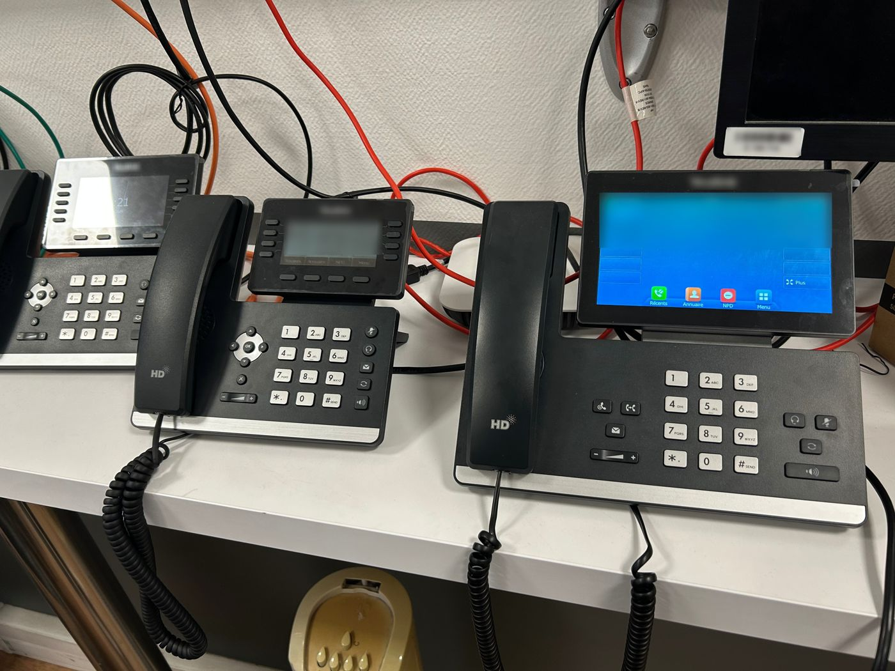
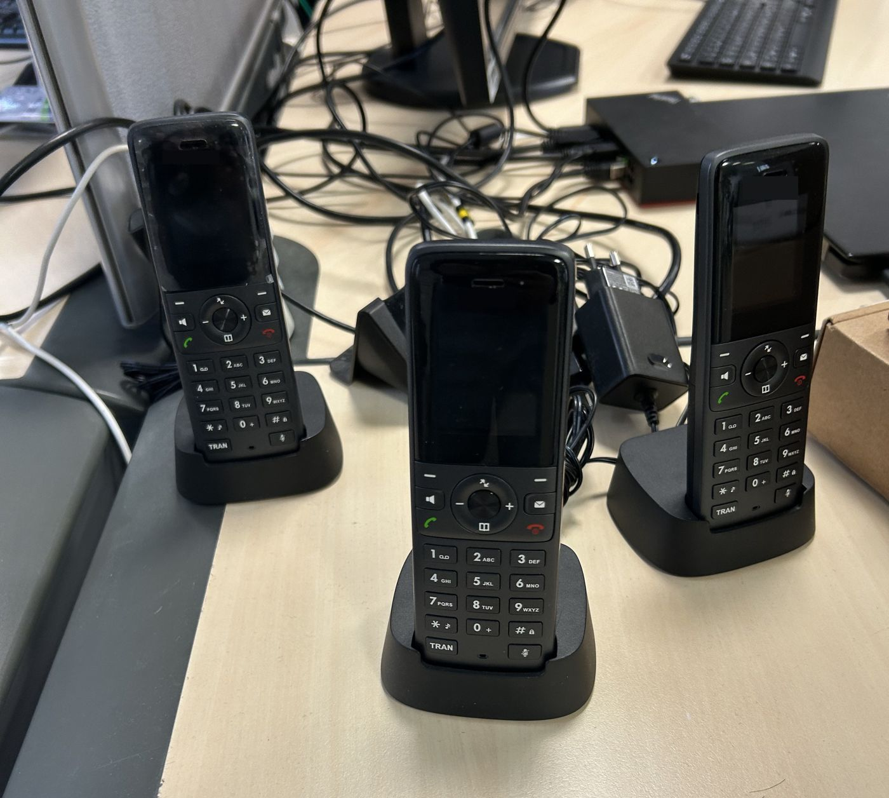
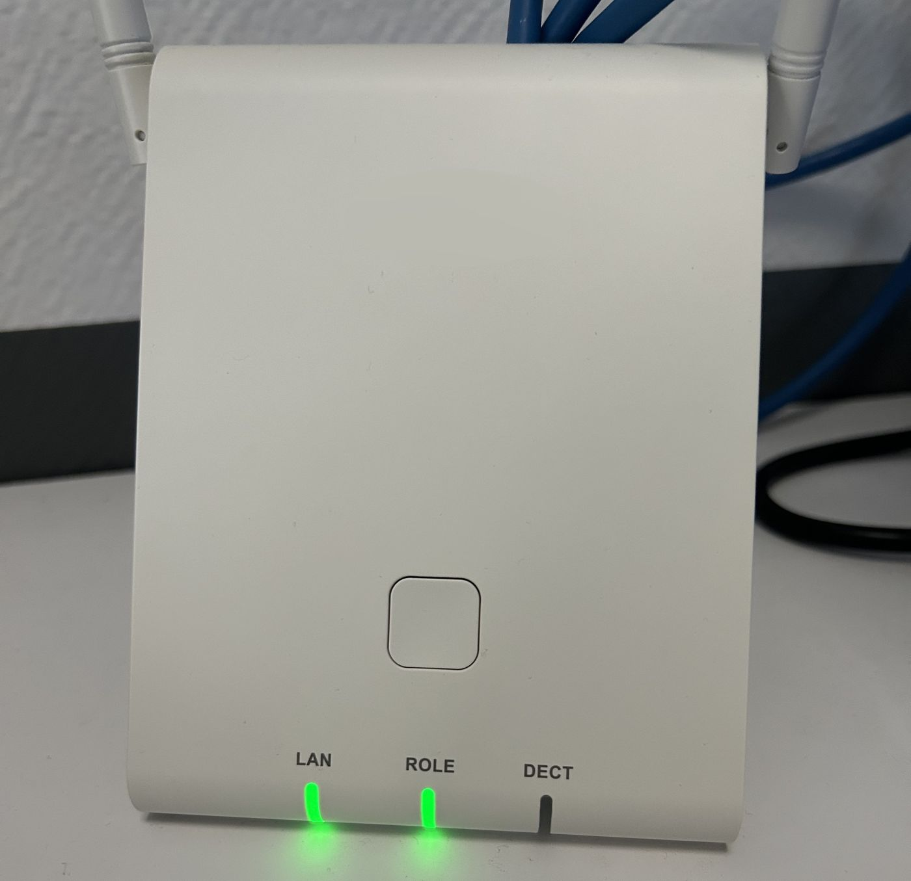
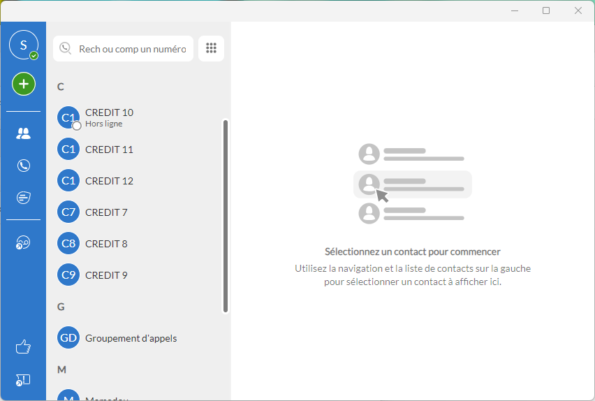
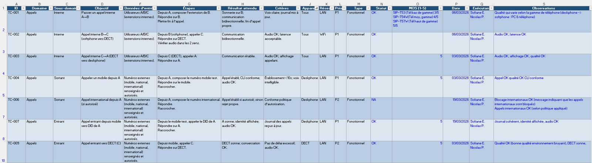
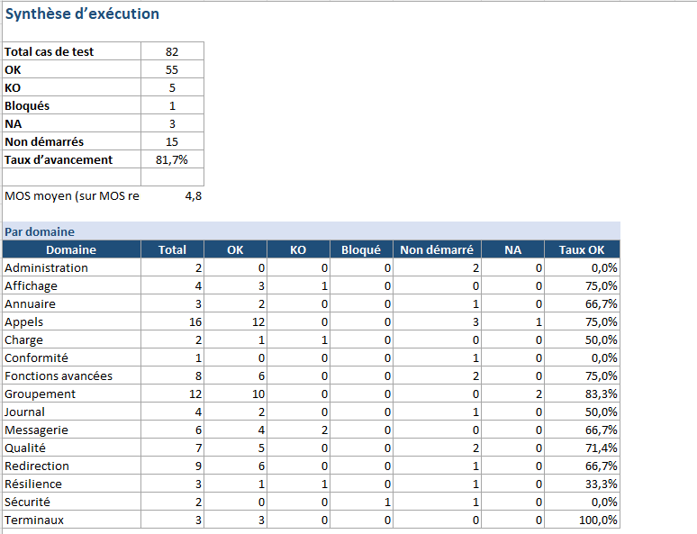

Entreprise · Alternance
PoC téléphonie IP (softphonie)
Tester le remplacement d'un autocommutateur analogique par une téléphonie IP cloud, avec une recette de 82 cas de test.
- VoIP / Centrex
- Terminaux IP
- DECT
- Softphone
- Excel
Contexte
Le Crédit Municipal de Paris utilise un PABX analogique vieillissant. Pour moderniser la téléphonie, j'ai participé à une preuve de concept d'une solution Centrex (cloud), avec terminaux IP, bornes DECT et application de softphonie.
Résultat
82 cas de test identifiés, environ 82 % d'avancement avant la restitution, qualité audio moyenne (MOS) de 4,8 sur 5. Mon travail (inventaire, plan de brassage, résultats de recette) a été documenté et transmis à l'équipe.
Étapes de réalisation
- Matériel. Terminaux IP par profil (premium pour la direction, intermédiaires, standards), bornes DECT pour la couverture sans fil, casques et softphone sur les postes fixes.
- Préparation réseau. Inventaire des adresses MAC dans Excel, repérage des prises murales, vérification du brassage et du statut des ports pour que l'administrateur configure les VLAN voix.
- Recette. Cahier de tests technique et fonctionnel, enrichi de tests complémentaires (par exemple l'enregistrement d'appel).
- Restitution. Retour structuré à mon responsable : points positifs, points bloquants, axes d'amélioration avant un déploiement global.
- Passation. Inventaire physique, plan de brassage et résultats de recette transmis à l'équipe.
Pourquoi remplacer l'existant ?
| Critère | Ancien PABX | Nouvelle solution (Centrex / VoIP) |
|---|---|---|
| Réseau | Analogique, vieillissant | IP / cloud |
| Capacité | Lignes T0, plus de 30 appels simultanés | Appels simultanés évolutifs |
| Maintenance | Matériel physique complexe et coûteux | Solution managée à distance |
| Mobilité | Poste fixe lié au bureau | Softphonie (applications PC et mobiles) |
| Sécurité | Protocoles limités | Sécurisation accrue (802.1x) |
Captures






Difficultés rencontrées
- Mon périmètre s'arrêtait à la recette : la configuration des VLAN et de la matrice de flux était assurée par l'administrateur.
- Zone de couverture DECT limitée à l'horizontale (environ 30 m) : constat relevé pendant les tests de mobilité.
Compétences
- VoIP
- Recette et cahier de tests
- Audit physique et brassage
- Documentation et passation